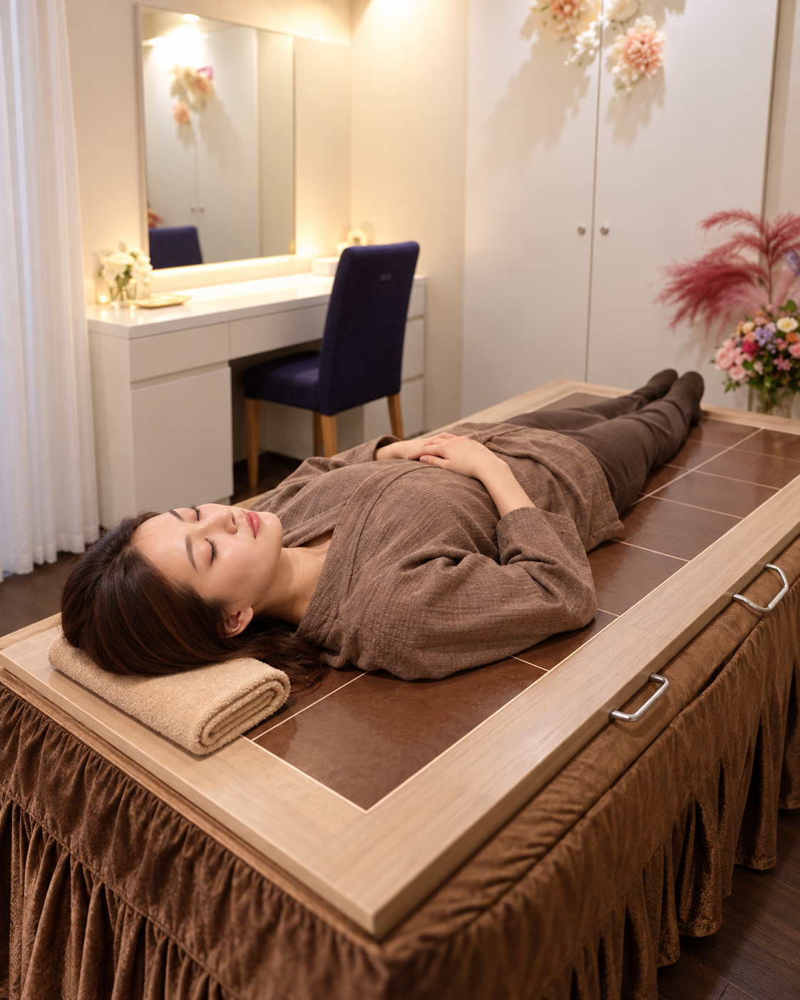
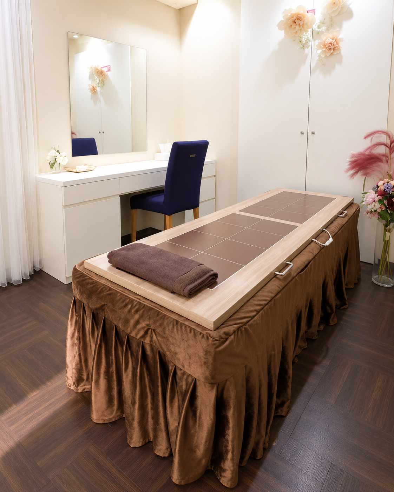
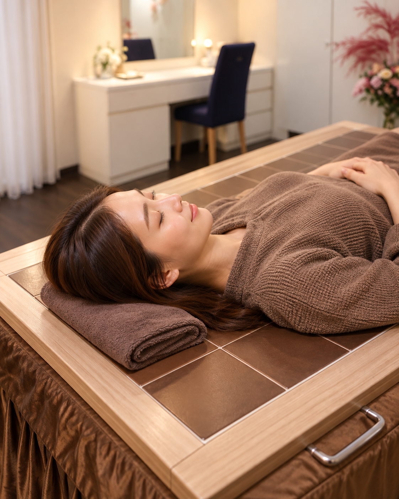
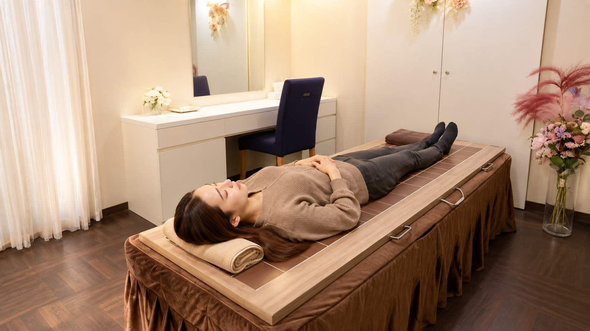

陶板浴は、約40℃前後の心地よい温かさの中で、ただ横になるだけ。
熱さを我慢しすぎず、静かに自分を休ませるための、やさしい温活です。
夏は冷房、冷たい飲み物、シャワー中心の生活で、知らないうちに身体を冷やしやすい季節。
秋は、その“冷やす生活”から“温める生活”へ切り替えるちょうどいいタイミングです。
本格的な冬の前だからこそ、無理のないペースで始めやすい。
秋の温活は、「頑張る」より「整えていく」イメージがちょうどいいのです。

温められた陶板の上で、15〜40分ほどゆっくり横になって過ごす温活です。
高温の空間に入るというより、やさしい温かさの中で“休む時間をつくる”ことに近いケアです。
熱さを我慢するというより、心地よく身体をゆるめていく感覚。サウナの高温が苦手な方にも取り入れやすい温活です。
頑張って何かをする必要はありません。何もしない時間そのものが、自分をいたわる時間になります。
周りを気にせず、自分のペースで過ごせるのも魅力。静かにひと息つきたい方にもおすすめです。
これは「陶板浴がおすすめかどうか」を決めつける診断ではなく、
今の生活に合わせた、無理のない通い方を一緒に考えるためのチェックです。
4つの質問に答えると、あなたに合いそうな通い方を表示します。

陶板浴の魅力は、“時間に余裕のある人だけの特別なもの”ではないこと。
平日は仕事や家事で自分のことが後回しになりがちな方でも、
「今日は少し休もう」と思ったタイミングで、無理なく取り入れやすいケアです。
いきなり長時間でなくても始めやすく、まずは体験してみたい方にも。
準備のハードルが低いから、「思い立ったら行きやすい」が叶いやすい。
平日、休日、すきま時間など、自分のペースで考えやすい温活です。
頑張るためのケアというより、まずは自分をゆるめるための時間。
忙しい毎日は、常に何かを考え、何かをこなして、頭も身体も動きっぱなし。
陶板浴は、そんな毎日の中で「何もしない」を自分に許せる時間でもあります。
特別な技術を頑張って受けるというより、まずは力を抜くこと。
それだけでも、気持ちがふっとほどける方は少なくありません。
サウナのような高温が好きな方には別の良さがありますが、
「熱すぎるのは苦手」「もっとやさしいものがいい」という方には、陶板浴の心地よさがしっくりくることがあります。

「どんな場所なんだろう？」が事前にイメージできることも、初めての方にとって大切な安心材料です。
清潔感のある個室空間で、周りを気にせずゆっくりお過ごしいただけます。

まずは気軽に体験。予約ページや店舗情報をご確認のうえご来店ください。
はじめての方にも分かりやすく、受け方や過ごし方を丁寧にご説明します。
温められた陶板の上で15〜40分ほど、ただゆっくり横になってお過ごしください。
終わったあとも慌てずに。心地よさの余韻まで含めて、自分をいたわる時間に。
どれが一番というより、自分にとって続けやすいかが大切。
陶板浴は、「高温を頑張る」より「やさしく温まりながら休む」に近い温活です。
| 項目 | 陶板浴 | お風呂 | サウナ |
|---|---|---|---|
| 温度の印象 | 約40℃前後のやさしい温かさ | 約38〜40℃前後 | 高温 |
| 過ごし方 | 横になって休む | お湯につかる | 高温空間で過ごす |
| 向いている方 | ゆっくり整えたい方 | 日常の入浴習慣として | 熱さや爽快感が好きな方 |
| 魅力 | 頑張らずに取り入れやすい | 日常で使いやすい | 刺激やリフレッシュ感 |
はい。陶板浴は高温の空間に入るというより、約40℃前後のやさしい温かさの中で横になって過ごすスタイルです。熱さが苦手な方にも取り入れやすい温活です。
大量の発汗だけを目的にするものではありません。気持ちよく過ごせること、自分を休ませる時間になることも大切なポイントです。
冷えが気になる方、忙しくて自分を休ませる時間が少ない方、サウナの高温が苦手な方、やさしい温活を続けたい方におすすめです。
ページ内の通い方チェックを参考にしつつ、迷う場合は店舗スタッフにぜひご相談ください。生活リズムに合わせた無理のない取り入れ方を一緒に考えられます。
かなりしっかり取り入れたい方の中には、ご自宅に陶板浴を迎えられる方もいらっしゃいます。気になる場合は店舗スタッフへご相談ください。